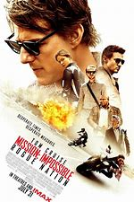
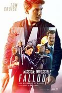

|
1.
Mission: Impossible
(1996)
1hr 50min | Action, Thriller, Adventure
 7.1/10
 59
Official Trailer
|
This movie, based on the television series, finds Jim Phelps (Jon Voight) and his team charged with stopping a traitor from stealing and selling classified material. Everything was going well until the man they are following and all of the team are inexplicably killed except for Ethan Hunt (Tom Cruise). Ethan then calls Director Kittridge (Henry Czerny) and goes to meet him when he discovers that the whole mission was to ferret a mole that they have been suspicious of for some time. Kittridge shows evidence that hints that Ethan's the one for whom they have been looking, but Ethan knows that he is not, so he escapes. Ethan then arranges to meet the buyer, whom he warns against using the material he has, and when they meet, he offers to get what he paid for in exchange for telling who the mole is. Ethan, along with Phelps' wife Claire (Emmanuelle Béart) recruits two disavowed Agents, Franz Krieger (Jean Reno) and Luther Stickell (Ving Rhames), to help him, which won't be easy, it'll be nearly impossible. |
Tom Cruise
Jon Voight
Emmanuelle Béart
Jean Reno
Ving Rhames
|
Brian_De_Palma
|
|
2.
Mission: Impossible II
(2000)
2hr 3min | Action, Thriller, Adventure
6.1/10
59
Official Trailer
|
Chimera is a deadly virus that will bear a grisly death unless you are given the antidote. The creator of Chimera is murdered and the antidote is stolen by a disavowed I.M.F. Agent, Sean Ambrose (Dougray Scott). The Impossible Mission Force, (I.M.F.), hire the skilled and charming Ethan Hunt (Tom Cruise), and the beautiful Nyah Hall (Thandie Newton), who has had her share with Ambrose. Their mission, should they choose to accept it, is to send Hall undercover to Ambrose and learn what she can for Hunt to bring down Chimera, but they will have to break into a secure lab by jumping off of buildings and dodging bullets. Its impossible. |
Tom Cruise
Dougray Scott
Thandie Newton
Brendan Gleeson
Ving Rhames
|
John Woo
|
 |
3.
Mission: Impossible III
(2006)
2hr 6min | Action, Thriller, Adventure
6.9/10
66
Official Trailer
|
A man named Owen Davian kills an IMF agent that was sent undercover by the legendary Ethan Hunt, who has retired from combat missions. Hunt now has a fiancé, Julia, who believes that he works for the traffic department when he really trains younger IMF agents to go into combat. He is assigned to his last mission. His mission, should he choose to accept it is to capture Davian, who is selling a toxic weapon called the rabbits foot. But Davian is reckless, cruel, and deadly. He promises Hunt that he will find Julia, hurt her, and Ethan will be too dead to help her. The mission is no more different to others, its dangerous, smart, and impossible; but now it's personal. |
Tom Cruise
Michelle Monaghan
Philip Seymour Hoffman
Simon Pegg
Ving Rhames
|
J.J. Abrams
|
|
4.
Mission: Impossible - Ghost Protocol
(2011)
2hr 12min | Action, Thriller, Adventure
7.4/10
73
Official Trailer
|
In the fourth installment of the Mission Impossible series, Ethan Hunt and a new team race against time to track down Hendricks, a dangerous terrorist who has gained access to Russian nuclear launch codes and is planning a strike on the United States. An attempt by the team to stop him at the Kremlin ends in a disaster, with an explosion causing severe damage to the Kremlin and the IMF being implicated in the bombing, forcing the President to invoke Ghost Protocol, under which the IMF is disavowed, and will be offered no help or backup in any form. Undaunted, Ethan and his team chase Hendricks to Dubai, and from there to Mumbai, but several spectacular action sequences later, they might still be too late to stop a disaster. |
Tom Cruise
Paula Patton
Simon Pegg
Ving Rhames
|
Brad Bird
|
|  |
5.
Mission: Impossible - Rogue Nation
(2015)
2hr 6min | Action, Thriller, Adventure
7.4/10
75
Official Trailer
|
After an excoriating official US government review of its history of questionable missions with high stakes and considerable collateral damage, the IMF is disbanded. Regardless, Ethan Hunt is undeterred from his personal mission to stop a sinister counter-organization to the IMF, the Syndicate. Now a fugitive from the CIA, Hunt secretly calls his colleagues together to accomplish that, which soon also involves a mysterious woman who has an agenda of her own with those criminals. With both sides playing deadly complex games of intrigue, Hunt and his team must take even more risk with difficult options to protect the world. |
Tom Cruise
Rebecca Ferguson
Jeremy Renner
Simon Pegg
Ving Rhames
|
Christopher McQuarrie
|
|  |
6.
Mission: Impossible - Fallout
(2018)
2hr 27min | Action, Thriller, Adventure
7.7/10
86
Official Trailer
|
After a mission goes wrong and anarchist Solomon Lane (Sean Harris) escapes custody, Ethan Hunt (Tom Cruise) and his IMF team are blamed and their loyalty is questioned. They attempt to fulfill their initial mission and recapture Lane while also trying to outrun a ruthless CIA agent (Henry Cavill) tasked with taking them out. As Hunt fends off these old and new threats, he also realizes allies within IMF might have other motives. Produced, written and directed by Christopher McQuarrie. Alec Baldwin, Angela Bassett, Rebecca Ferguson, Simon Pegg, Ving Rhames and Michelle Monaghan co-star. |
Tom Cruise
Henry Cavill
Rebecca Ferguson
Simon Pegg
Ving Rhames
|